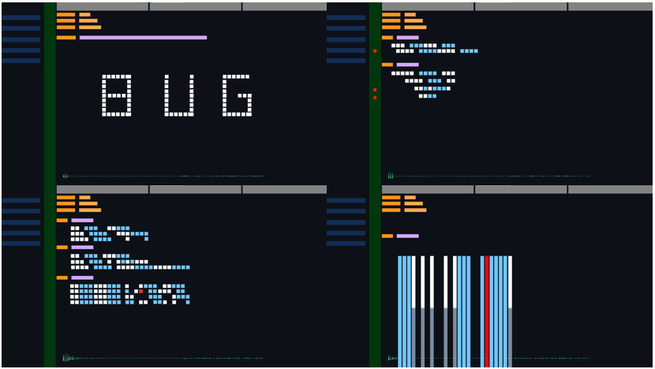
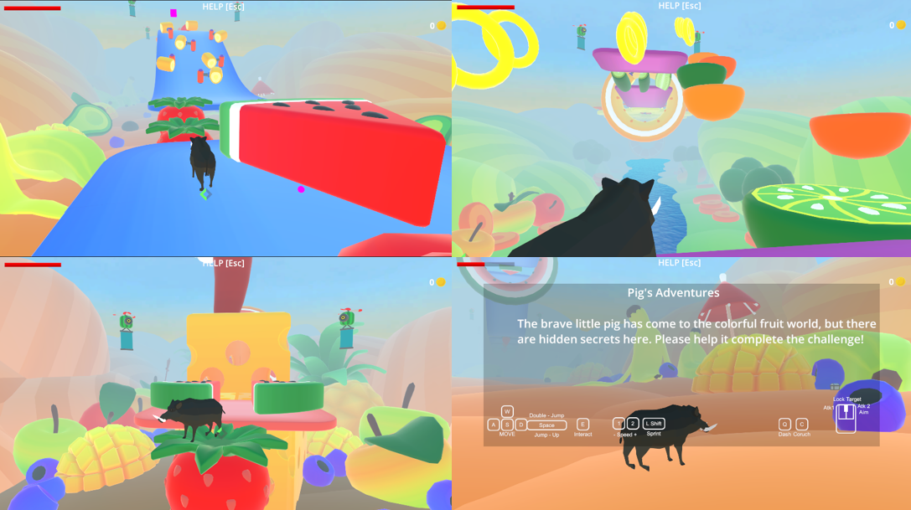
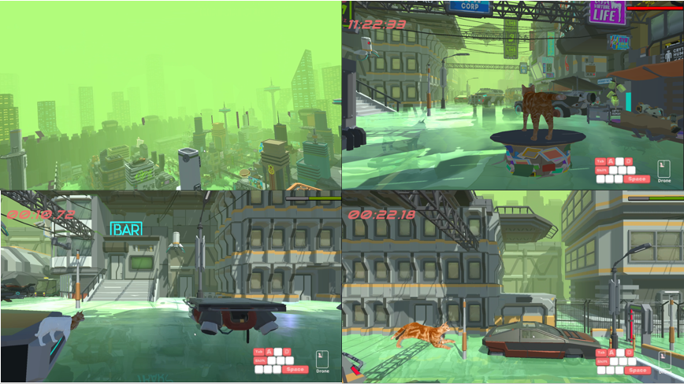
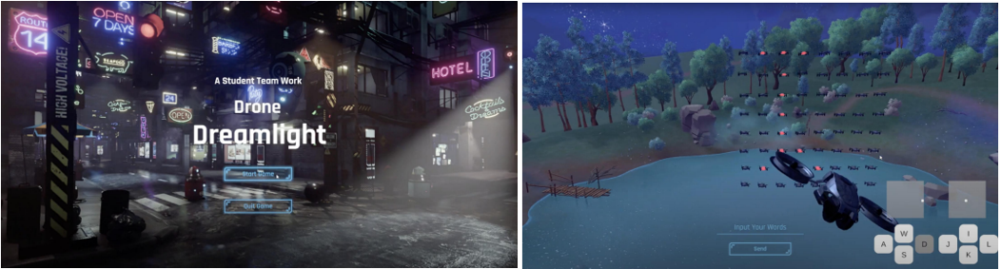
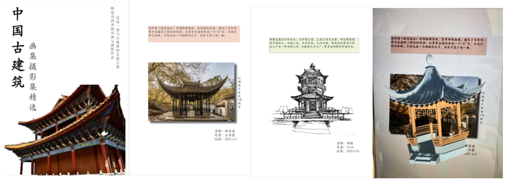

Game Projects
CODEBUG
"CODEBUG" is a puzzle game with the theme of bugs and only uses circles, rectangles and triangles. The interface is similar to the software VS Code often used by programmers. Players solve bugs by finding patterns. In the game, players can hear a nice song at each level, and the small triangle blocks below will dance to the music.

The Adventures of Piggy
"The Adventures of Piggy" is a 3D adventure game in which players control a pig to pass through levels composed of various fruits and vegetables and finally get surprise rewards. Click here to view the game homepage.

Lost in Cat
"Lost in Cat" is a high-tech horizontal platform jumping game. Players need to use high-tech drones to build a path for the kitten to move forward, cross ruins and dangerous places, and find hope. The game combines wasteland and future technology styles. The dynamic platform creation mechanism challenges the player's strategy and operation. The narrative and music render a warm journey across despair and hope.

Drone Light Game
This is an interactive game about drones. Players can enter some sentences and the drone wall will scroll the sentences. Players can also control a drone to enter or observe the environment around the drone wall.

AR Ancient Architecture E-book
I used AR technology and Adobe InDesign's e-book editor to create a software that allows users to interact with the corresponding models by simply scanning the pictures in the books. This allows users to understand ancient Chinese architecture in a more vivid way.
